CS180: Intro to Computer Vision and Computational Photography
Project #3: Flow Matching
Results from the pretrained image-model experiments in Part A and the from-scratch MNIST models in Part B.
Part A: Visualizing Training and Sampling
For the image-model exercises, I used an emoji image as the input and the notebook's pretrained flow model. The figures below are saved outputs from the Part A notebook.
A 1.1: Constructing Noisy Training Inputs
The notebook interpolates between the same Gaussian noise sample and the original image at t = 0.25, 0.50, and 0.75.
A 1.2: Classical Denoising
For each noisy input, the notebook rescales by 1 / t, applies Gaussian blur, and selects the lowest-MSE result from blur sigmas 1, 2, 4, 8, 16. This is a classical baseline, not a learned model.
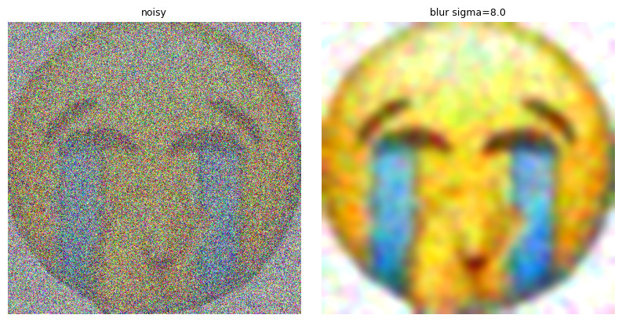
t = 0.25; selected blur sigma: 8.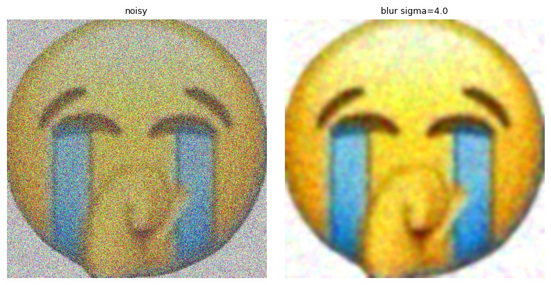
t = 0.50; selected blur sigma: 4.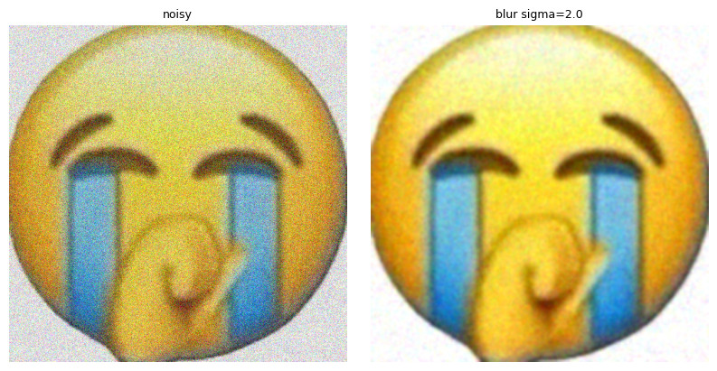
t = 0.75; selected blur sigma: 2.A 1.3: One-Step Denoising
With the prompt “a high quality photo,” a single velocity prediction gives x̂₁ = xₜ + (1 − t)vθ(xₜ, t, c). The panels show the original, noisy input, and one-step estimate at each time.
t = 0.25.t = 0.50.t = 0.75.A 1.4: Visualizing Velocity
At each time, the notebook compares the noisy input, the model’s predicted update (1 − t)v̂, the ground-truth update x₁ − xₜ, and a per-pixel RGB RMS error map.
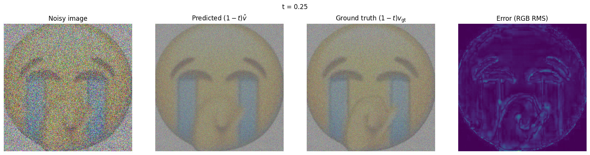
t = 0.25.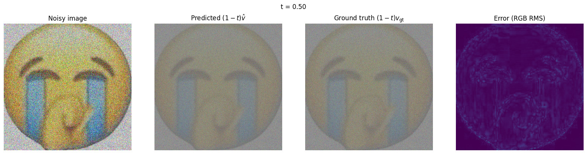
t = 0.50.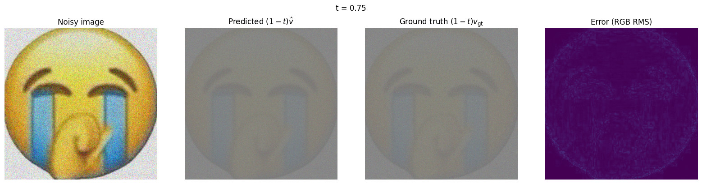
t = 0.75.A 1.5: Iterative Denoising with Euler Sampling
Starting from the saved t = 0.50 input, Euler sampling recomputes the velocity for 25 updates with step size 0.02. The trajectory shows every fifth step and the final image. The separate comparison shows that one-step denoising achieved the lowest MSE on this input.
t = 0.50 to t = 1.00.t = 0.50. Per-pixel MSE: blur 0.009390, one step 0.001702, Euler 0.002026.A 1.6: Generating Images from Noise
Five independent Gaussian samples, seeds 180–184, are generated with the prompt “a high quality photo” and 50 Euler updates.
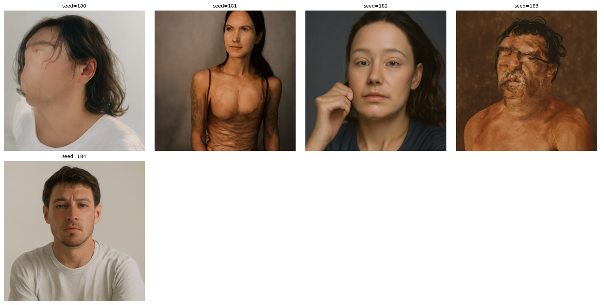
A 2.1: Classifier-Free Guidance
Classifier-free guidance uses w = 7 and the same initial seeds as the previous experiment, making it possible to compare the guided results with the unguided samples.
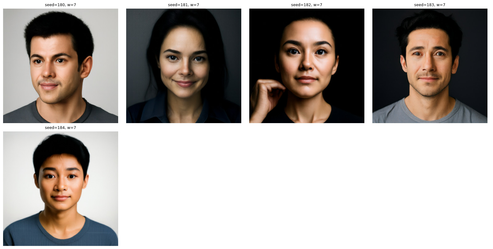
w = 7.A 3.1: Image-to-Image Editing
Using the prompt “a high quality photo,” the notebook edits the Campanile and two personal images at starting times 0.02, 0.04, 0.06, 0.10, 0.14, 0.25, 0.50. Lower starting times retain more of the input; higher starting times give the model more freedom to change it.
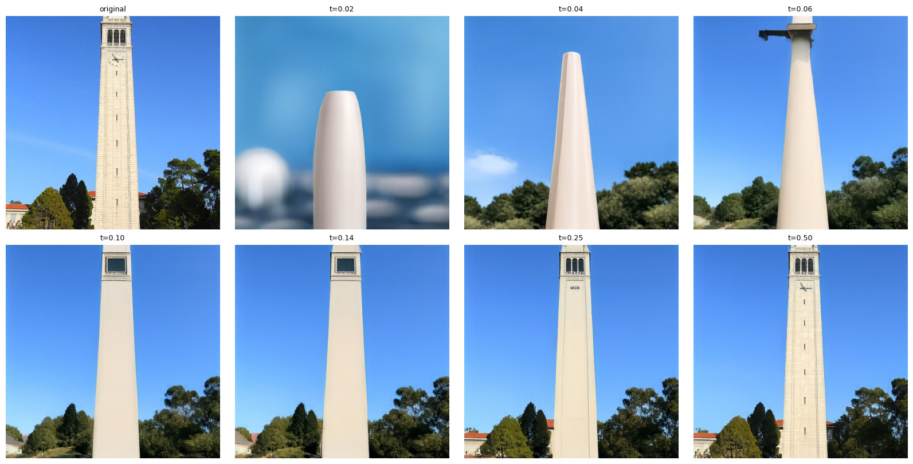
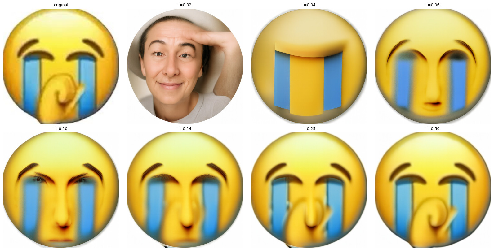
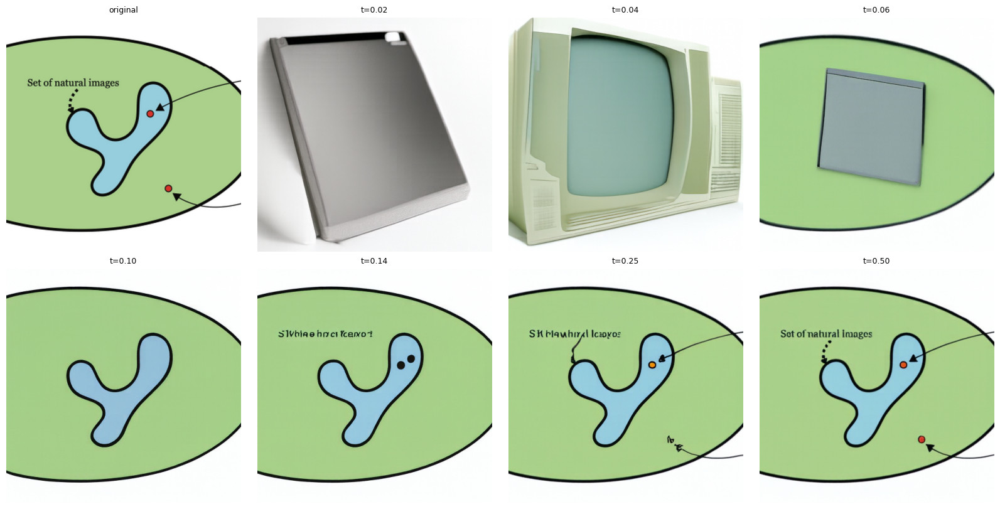
A 3.1: Editing Hand-Drawn and Web Images
The same image-to-image process and seven starting times are applied to a web image and two hand-drawn images.
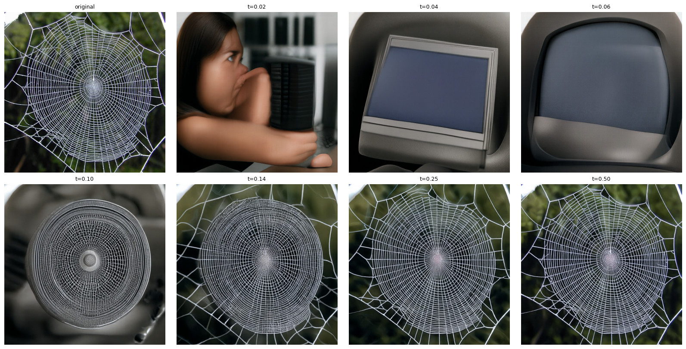
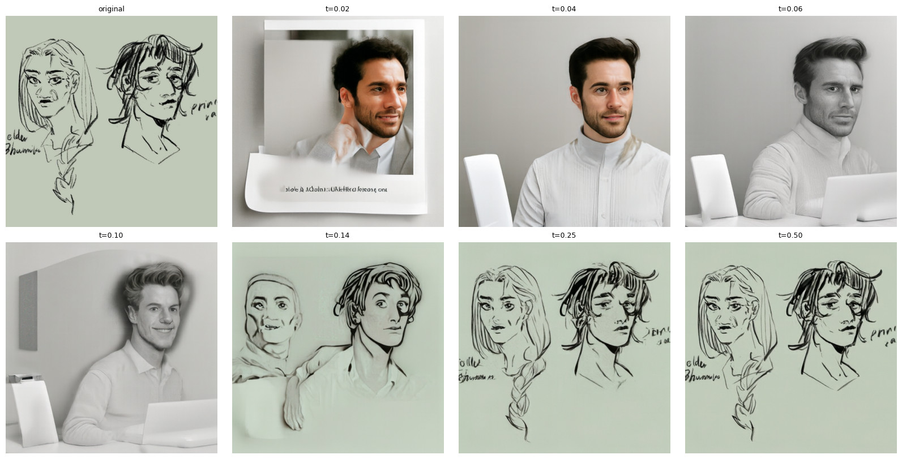
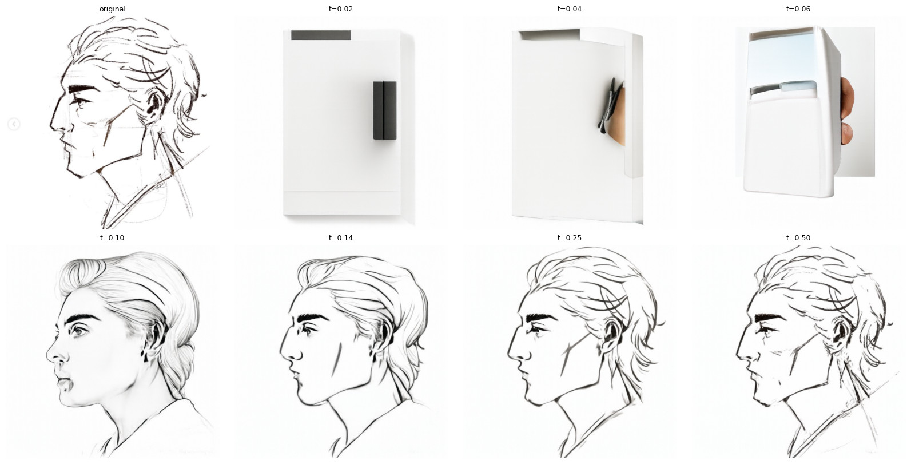
A 3.2: Text-Guided Image Editing
For a text-guided edit of my emoji image, I used the prompt “make it into an emoji grimacing with the hand over its mouth.”
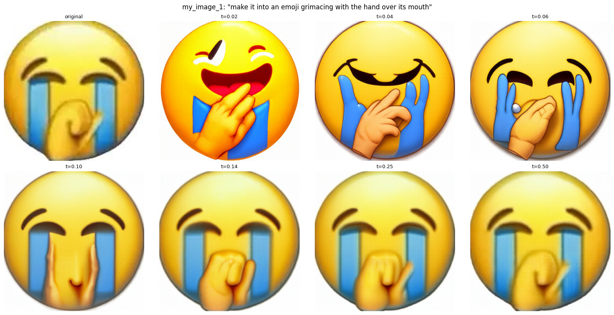
Creative applications
Visual anagrams combine two prompts so a result can be interpreted differently after a 180-degree rotation. The notebook's two prompt pairs are shown here.
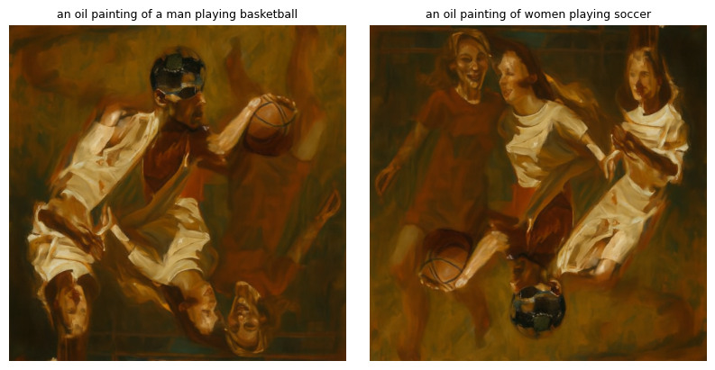
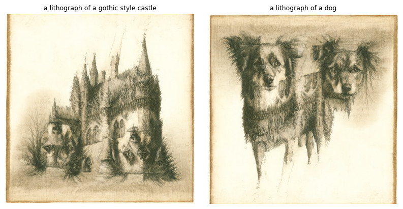
The hybrid images combine low-frequency structure from one prompt with high-frequency detail from another.
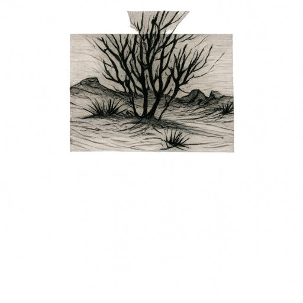
Part B: Flow Matching from Scratch
Part B trains U-Nets on MNIST. These results progress from single-step denoising to time-conditioned and class-conditioned flow matching.
B 1.1–1.2: U-Net and Noising Process
The MNIST denoiser is a 28 × 28 convolutional U-Net. Its encoder reduces feature maps from 28 × 28 to 14 × 14 and 7 × 7, then a bottleneck feeds a decoder that concatenates encoder features through skip connections. The input is a clean digit plus Gaussian noise; the first visualization shows noise strengths σ = 0, 0.2, 0.4, 0.6. The denoising training run uses σ = 0.5 and predicts the clean image.
B 1.2.1: Training the Single-Step Denoiser
The unconditional U-Net is trained for five epochs with Adam and pixelwise MSE. Training loss falls from 0.0213 after epoch 1 to 0.0081 after epoch 5.
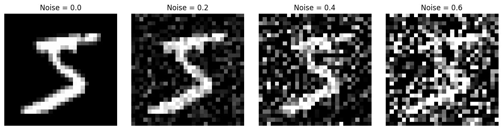
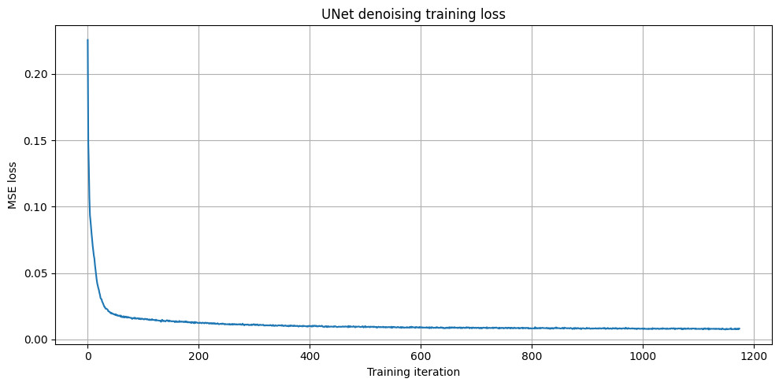
B 1.2.2: Out-of-Distribution Testing
The trained denoiser is evaluated on held-out digits with noise strengths from σ = 0 through σ = 1, comparing each clean input, noisy observation, and model prediction.
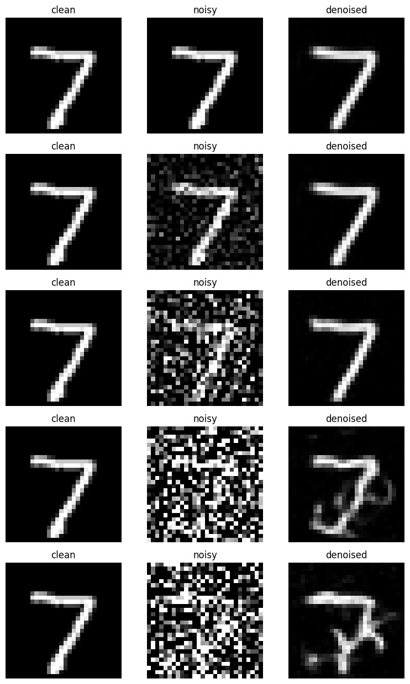
B 1.2.3: Denoising Pure Noise
A separate U-Net is trained to map independent Gaussian noise directly to clean MNIST digits. Its five-epoch average MSE declines from 0.072252 to 0.067379. Outputs trend toward averaged digit-like shapes rather than a variety of sharp samples because an MSE model learns an average target for an ambiguous noise input.
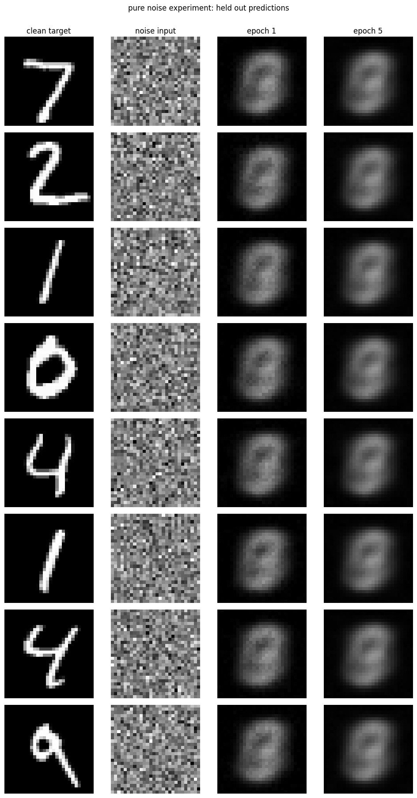
B 2.1–2.3: Time-Conditioned U-Net Training and Sampling
For each training example, the notebook draws Gaussian noise x₀ and time t, interpolates to the digit with xₜ = (1 − t)x₀ + tx₁, and trains the U-Net to predict velocity x₁ − x₀. The time-conditioned model uses a 128-channel base width, Adam at 1e-4, 50 time bins, and five epochs. Its loss decreases from 0.212401 to 0.111388.
Sampling starts from Gaussian noise and follows the predicted velocity with 50 Euler steps. The notebook's sampler produces four samples with seed 0.
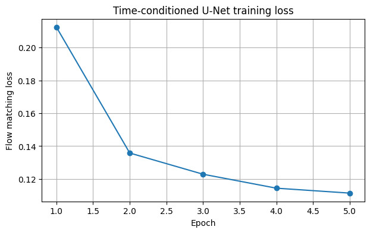
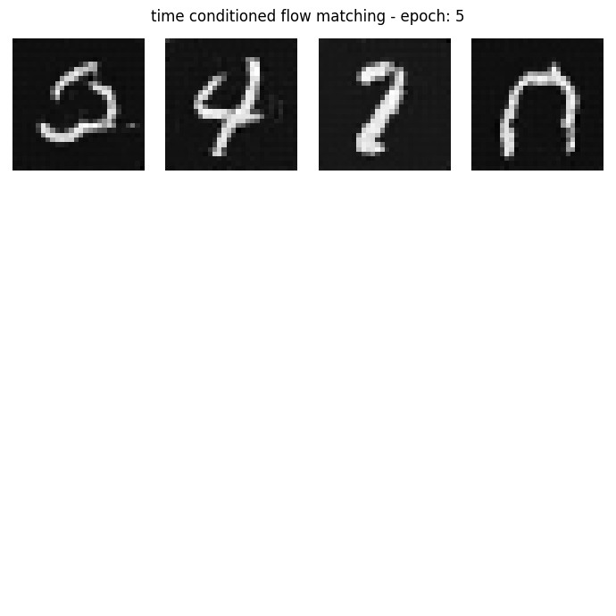
B 2.4–2.6: Class-Conditioned U-Net Training and Sampling
The class-conditioned U-Net uses a 64-channel base width and is trained for 10 epochs with batch size 64, Adam starting at 0.01, and class-dropout probability 0.1. The scheduled run uses exponential decay with γ = 0.11/10. Samples are generated for all ten digit labels at epochs 1, 5, and 10: four examples per class, 300 Euler steps, guidance scale 5, and fixed seed 42.
The scheduled and constant-rate training curves finish at losses 0.088005 and 0.089560, respectively.
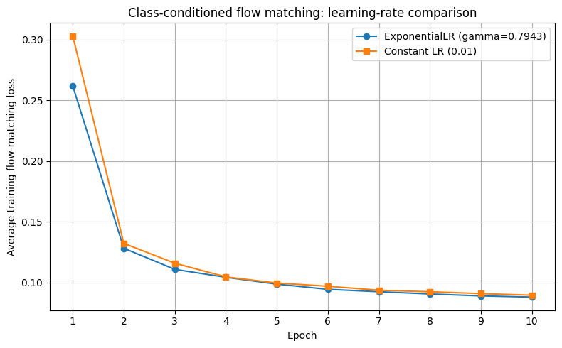
The saved sample grids show the scheduled model at epochs 1, 5, and 10.
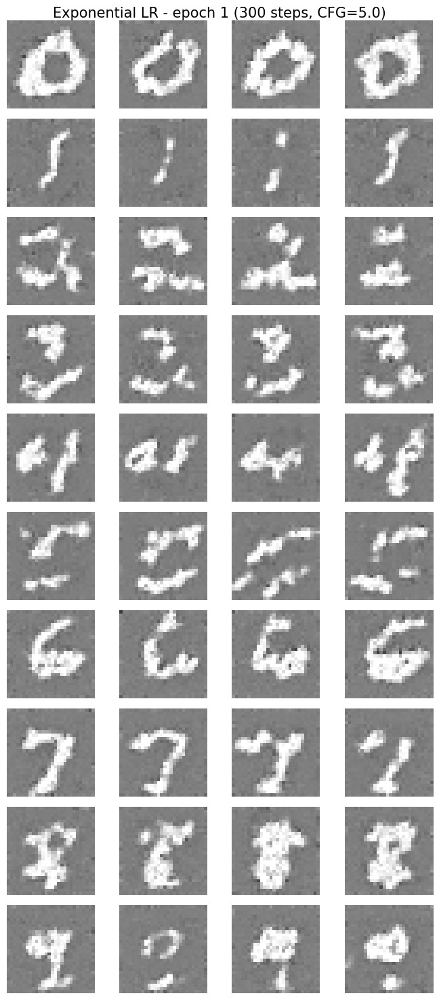
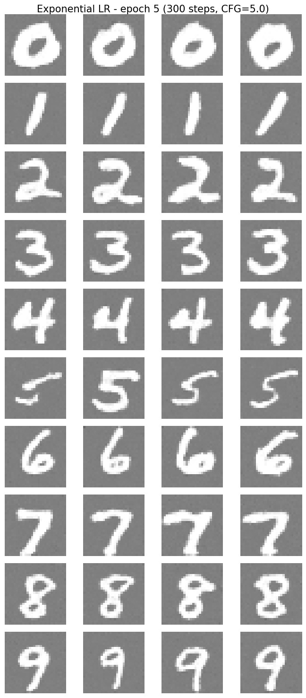
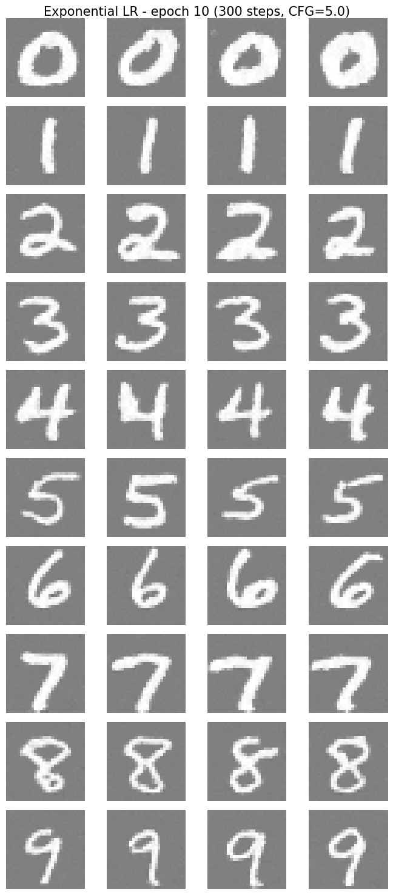
B 2.6: Training Without the Learning-Rate Scheduler
As a separate comparison, a freshly initialized class-conditioned model is trained for 10 epochs with the same setup but a constant learning rate of 0.01. Its final loss is slightly higher than the scheduled run's. The sample grid below uses the same 300-step sampler, guidance scale, and fixed seed.
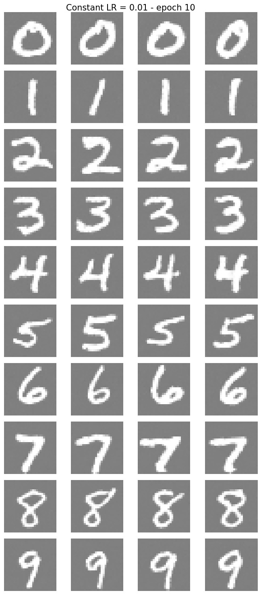
0.01, epoch 10; four samples for each class label.